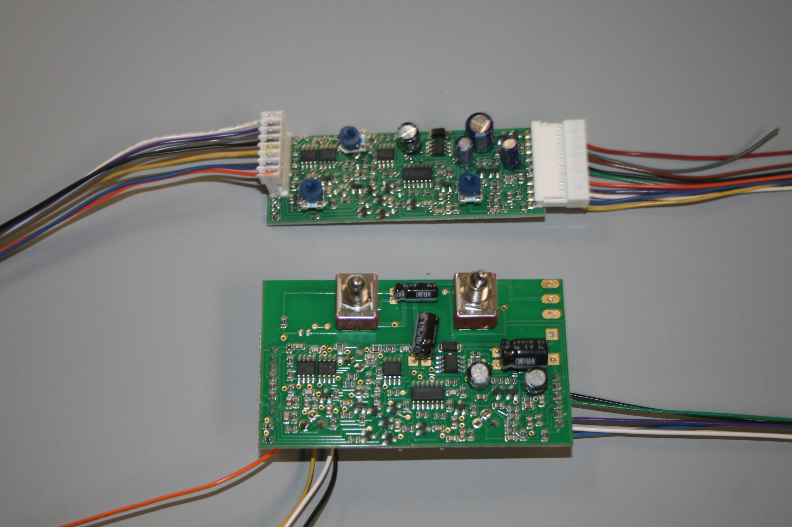
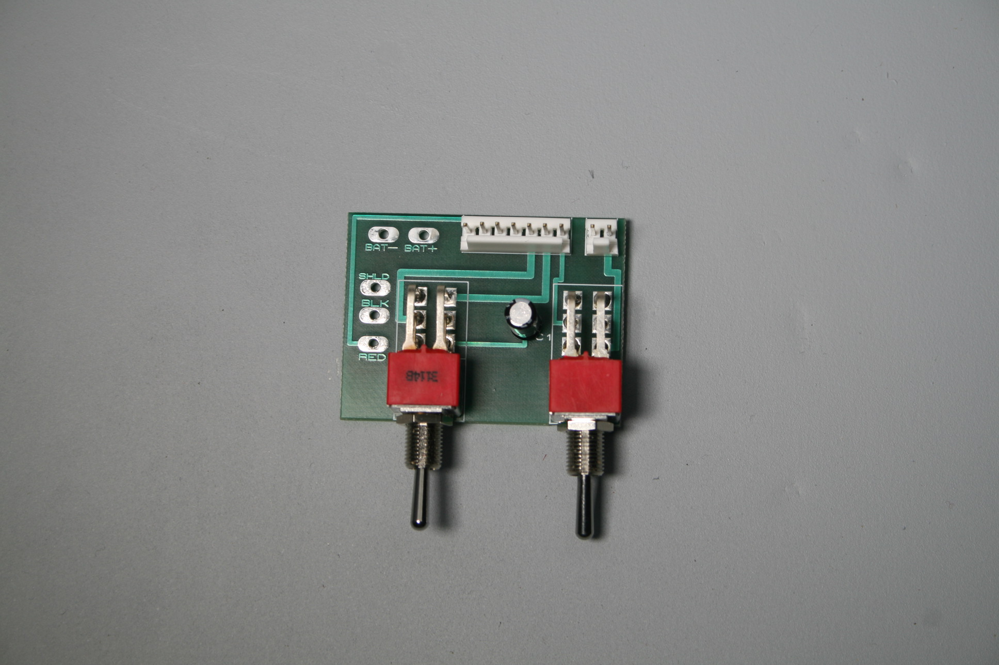
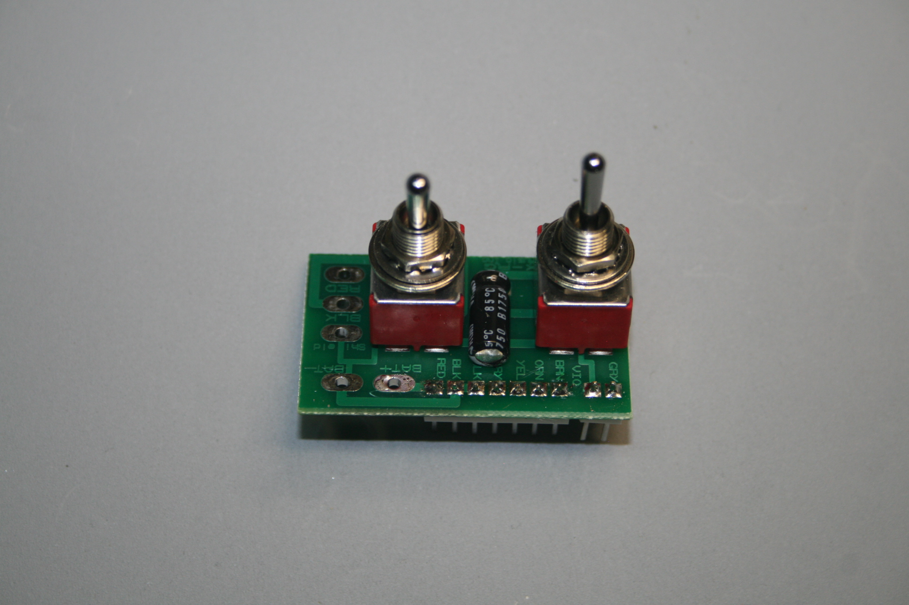

SUSTAINIAC "OEM" BOARDSWe have sold thousands of these over the past 20+ years to Jackson for the DK-2S model and to Schecter for many models. We still recommend our AUX-BOARDS for most installations where the cavity will hold them plus the retrofit board. |

SUSTAINIAC "AUX-TT" BOARDMost Sustainiac users choose the popular toggle switch option for both Sustainiac ON/OFF and also Harmonic Mode selection. This one mounts vertically in the cavity, taking up minimal room. |
|

SUSTAINIAC "AUX-RG" BOARDAnother dual toggle option, sits horizontally in the cavity. For cavities having less than 1.35 inches (35mm) height. |